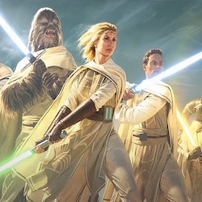
Acolyte (2024)
❌
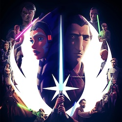
TotJ (2022–)
❌
I (1999)
⭕
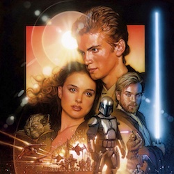
II (2002)
⭕
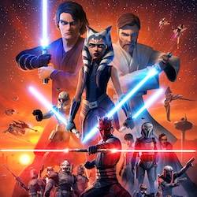
TCW (2008–2020)
⭕⭕⭕⭕⭕⭕❌
III (2005)
⭕
YJA (2023–)
❌
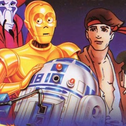
Droids (1985–1986)
❌
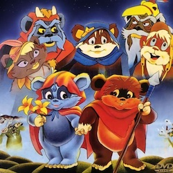
Ewoks (1985–1986)
❌❌
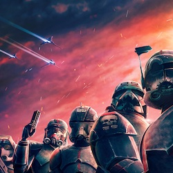
TBB (2021–)
❌❌
Solo (2018)
❌
OWK (2022)
❌
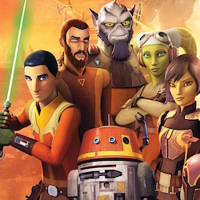
Rebels (2014–2018)
❌❌❌❌
Andor (2022–)
❌❌
Rogue One (2016)
⭕
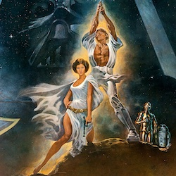
IV (1977)
⭕
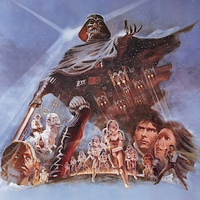
V (1980)
⭕
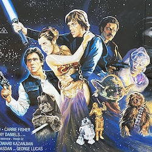
VI (1983)
⭕
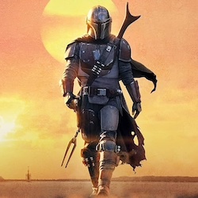
Mandalorian (2019–)
⭕⭕❌
TBoBF (2021–2022)
❌
 Ahsoka (2023)
Ahsoka (2023)
❌
Skeleton Crew (2024)
❌
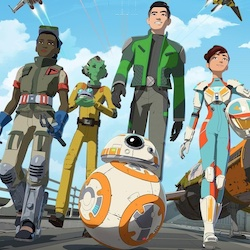
Resistance (2018–2020)
❌❌
VII (2015)
⭕
VIII (2017)
⭕
IX (2019)
⭕
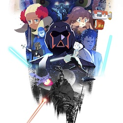
Visions (2021–)
⭕❌